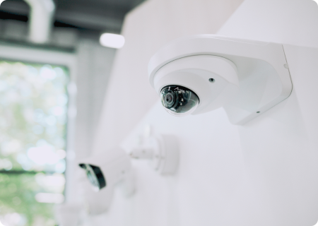
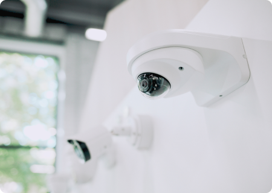

화재

낙상

PPE

연기

사람

군중

반려 동물

배회

차량

무기

HVAC & 조명 최적화
인원 기반 냉난방 제어로 에너지 낭비 최소화
점유·활동 패턴에 따른 조명 자동 제어 및 자연광 활용
구역 단위 제어로 공간별 효율적 에너지 운영
sLM 기반 AI 분석 리포트
자체 엔진 sLM 분석으로 데이터 수집·전처리·리포트 자동 생성
주간·월간 에너지 사용 및 효율 보고서 제공
절감 효과와 개선 시나리오를 시각화하여 관리자 지원
탄소배출 저감 효과
절감된 에너지 사용량을 탄소 배출 저감량으로 자동 환산
ESG 보고서 작성에 필요한 정량적 근거 데이터 제공
운영 효율과 환경 기여를 동시에 달성
글로벌 인증 지원
LEED, BREEAM 등 친환경 건축물 인증에 활용 가능한 지표 제공
규제 준수 및 지속가능성 평가 항목 충족 지원
공공·기업 ESG 경영보고서와 연계 가능한 데이터 기반
- 인원 기반 HVAC 제어, 회의실·구역 모니터링
- 엘리베이터·복도·옥상에서 화재, 연기, 낙상 감지
- 제한 구역 내 안전장비 착용 여부 및 침입 감지
- 지게차 이동·출입 혼잡 상황 실시간 모니터링
- AI 히트맵으로 고객 흐름 분석 및 레이아웃 최적화
- 혼잡·대기열·피크 타임 자동 감지
 

- 공원·지하철·공공건물에서 도시 안전 감시
- 기존 CCTV 인프라 활용, 이상 상황 사전 경고

- 실험실·계단·옥상 등 주요 구역 안전 모니터링
- 흡연, 폭력, 쓰러짐 등 사건 자동 감지·경고